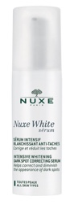

CAUDALIE Vinoperfect Radiance Serum

Nuxe White Intensive Correcting Serum

IOPE Essential Skin Boosting Serum
뭘 발라도 얼굴이 푸석푸석? 아무리 좋은 제품을 발라도 피부 위에서 겉도는 느낌? 그렇다면 스킨케어의 첫 단계부터 바꿔 보자. 에센스나 크림을 겹겹이 덧바르는 대신 스킨케어 전에 한 단계만 추가하여 발라도 피부 컨디션 UP! 해외에서 주목하는 한류 화장품이 바로 부스팅 세럼이다. 세안 후 가장 효과 보는 부스팅 세럼 노하우를 소개한다.
스킨케어 단계에서 가장 처음에 발라야 하는 부스팅 세럼. ‘촉진’의 뜻을 가진 만큼 다음에 바르는 기초 스킨케어의 흡수율을 높이는 것이 부스팅 세럼의 가장 중요한 기능이다. 한마디로, 화장품의 유효 성분을 보다 잘 흡수할 수 있도록 피부 상태를 ‘준비’단계로 만들어주는 것이다. 부스팅 세럼은 대체로 끈적이지 않고 물처럼 묽은 제형이다. 그래서 막을 씌우는 느낌 없이 싹 흡수되는 편이다. 이후의 단계에서 별도의 세럼(에센스)를 겹쳐 발라도 밀리지 않아 에센스 레이어링도 부담이 없다. 물기를 완전히 없애 바싹 마른 피부에는 무엇을 발라도 제대로 흡수되지 않고, 특히 겉피부가 계속 건조해지는 문제가 생긴다. 부스팅 에센스를 발라 겉피부가 어느 정도 수분을 머금은 상태에서 다음 단계에 들어가면 다음 단계의 영양 성분이 피부 속으로 잘 스며든다. 뿐만 아니라, 요즘 나오는 제품들은 각질제거 효과도 탁월하다. 굳이 물리적인 필링을 따로 하지 않아도 부스팅 세럼 하나로 매일매일 가벼운 각질제거를 할 수 있다. 부스팅 세럼은 브랜드마다 부스터 에센스, 퍼스트 세럼 등 다양한 제품명으로 출시되고 있다. 그러나 기초 케어 단계에서 맨처음 바르는 것들은 모두 부스팅 세럼에 해당된다. 일반 에센스와 헷갈리지 않도록 제품 설명 확인은 필수!
CAUDALIE Vinoperfect Radiance Serum
Nuxe White Intensive Correcting Serum
IOPE Essential Skin Boosting Serum